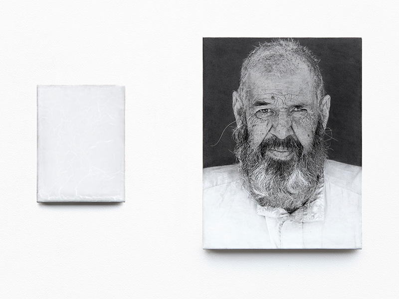
Untitled, 2018
Untitled, 2018, mixed media on linen, 22.8 x 17.1 cm (left), 40.8 x 30.6 cm (right)
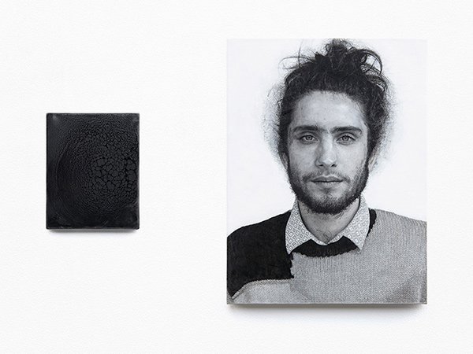
Untitled, 2018
Untitled, 2018, mixed media on linen, 20 x 16 cm (left), 46 x 34.5 cm (right)
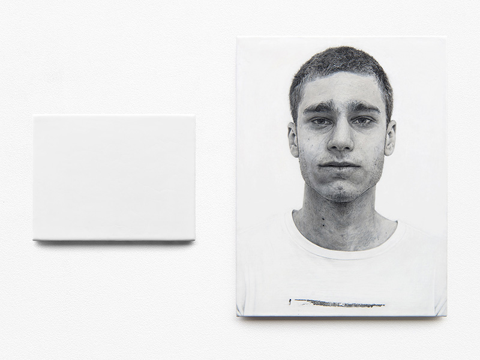
Untitled, 2018
Untitled, 2018, mixed media on linen, 20.2 x 26 cm (left), 45 x 33.8 cm (right)
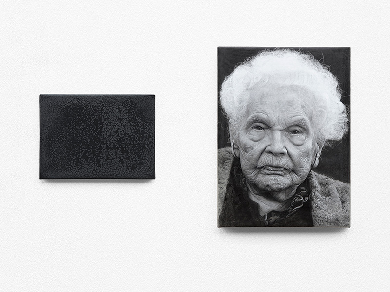
Untitled, 2018
Untitled, 2018, mixed media on linen, 14 x 19 cm (left), 30 x 22 cm (right)
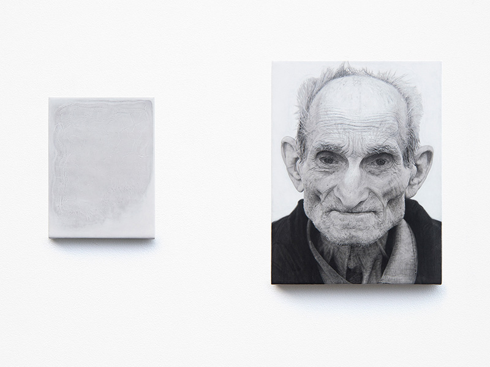
Untitled, 2017
Untitled, 2017, mixed media on linen, 19 x 14.1 cm (left), 30.1 x 22.6 cm (right)
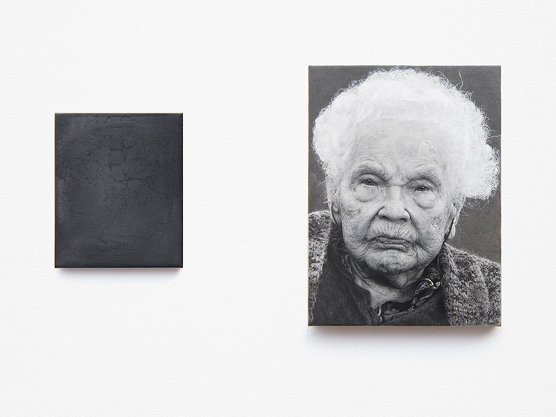
Untitled, 2017
Untitled, 2017, mixed media on linen, 18 x 15 cm (left), 30.6 x 22.6 cm (right)
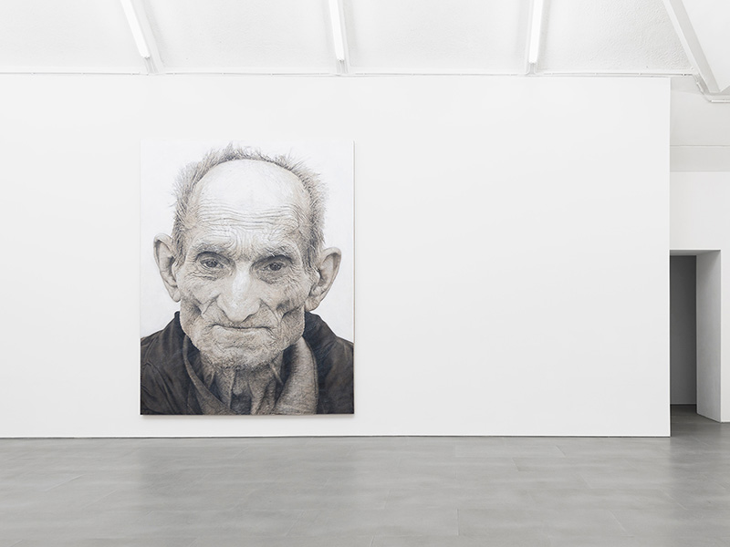
Stevan, 2016
Stevan, 2016, mixed media on linen, 350 x 270 cm
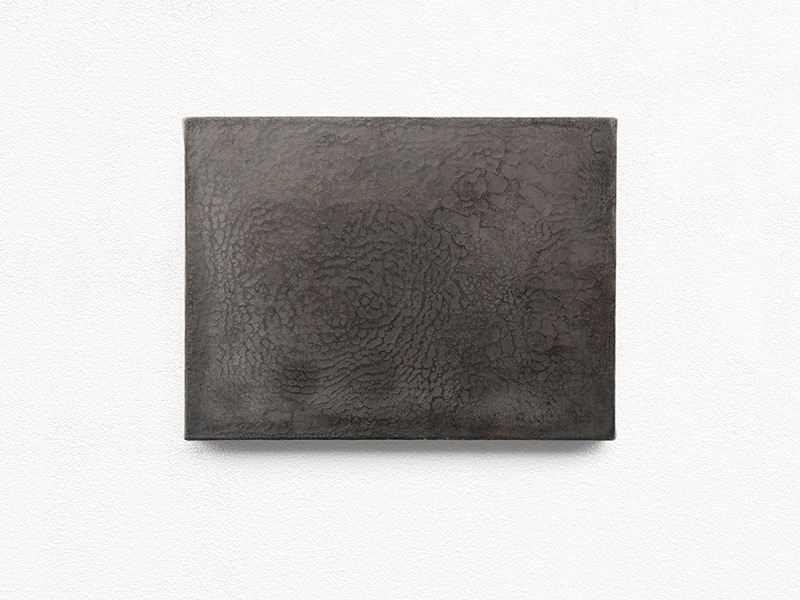
Untitled, 2016
Untitled, 2016, mixed media on linen, 350 x 270 cm
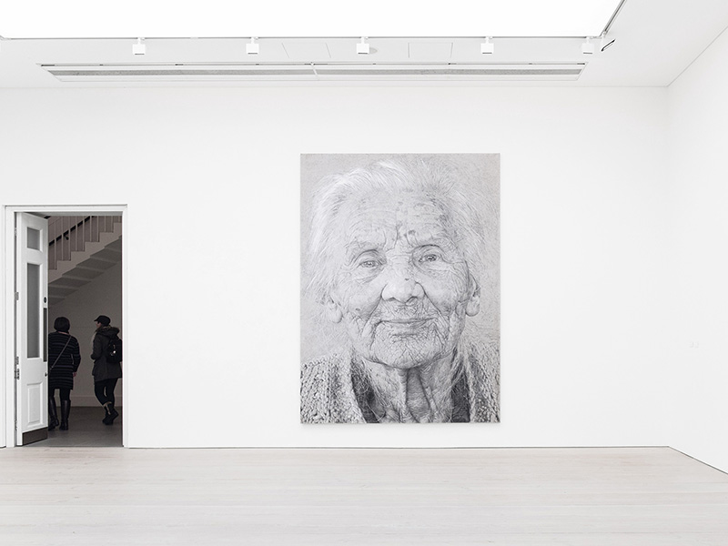
Grozda, 2014
Grozda, 2014, mixed media on linen, 320 x 237 cm
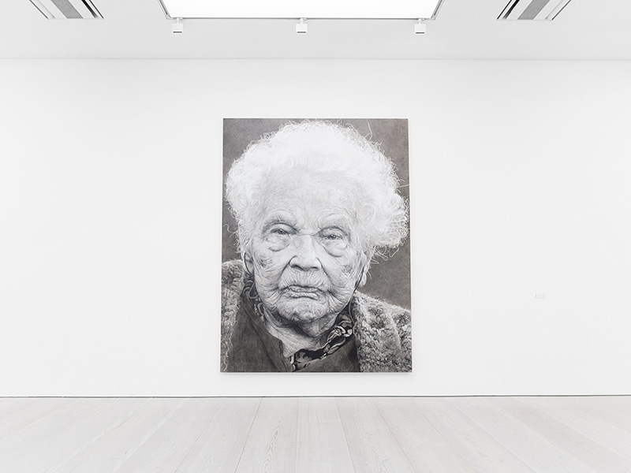
Alise, 2014
Alise, 2014, mixed media on linen, 320 x 237 cm
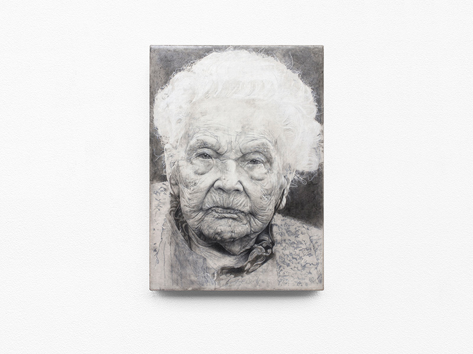
Alise, 2013
Alise, 2013, mixed media on linen, 29.7 x 21 cm
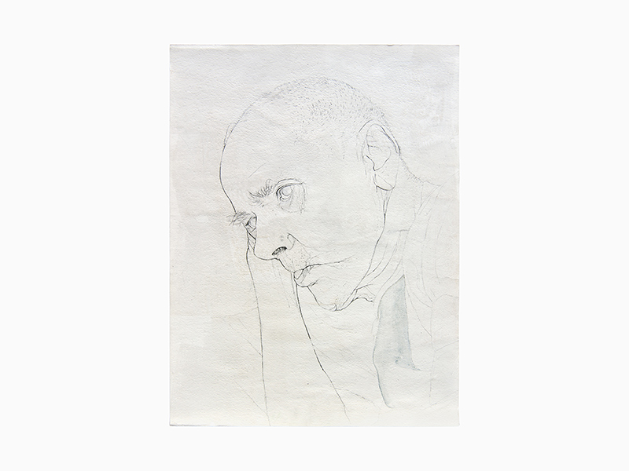
Untitled, 2010
Untitled, 2010
{kind=link}
{kind=link}
{kind=link}
{kind=link}
{kind=link}
{kind=link}
{kind=link}
{kind=link}
{kind=link}
{kind=link}
{kind=link}